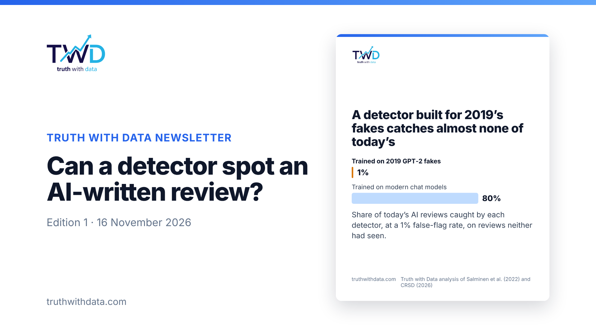

Title: Can a detector spot an AI-written review?
Cover image (download, then upload as the edition's cover): 
Body: select everything inside the dashed box below, copy, and paste into the LinkedIn editor under the title. Headings, bold and links carry over.
SEO title (Publishing menu → SEO): Can a detector spot an AI-written review? Tested on 8,036 reviews
SEO description: A detector trained on 2019's fake reviews caught 1% of today's AI-written ones. What works, what doesn't, and a detector you can try in your browser.
Text for the post that goes out with it (the box LinkedIn shows when you press Publish):
A detector trained on 2019's fake reviews caught 1% of today's AI-written ones.
I tested detectors on 8,036 short reviews, half by people and half by nine chat models up to GPT-5.2. When the detector has seen the model, it works well. When a new model arrives, it doesn't.
This is the first edition of my newsletter: every other week, one question answered with public data, with the method shown. Subscribe if that's useful to you.
Welcome to the first edition. Every other week I take one question people argue about, answer it with public data, and show the working: the chart, the method and the code.
Chat models can write a convincing product review in a second, for free, in any voice. Since October 2024 the US Federal Trade Commission's rule on fake reviews has covered AI-generated ones, and in the UK the Digital Markets, Competition and Consumers Act has banned fake reviews since April 2025. So anyone who publishes reviews now has to ask: can software tell which ones a machine wrote?
I built a test set of 8,036 short reviews. Half were written by people on Amazon before 2019, before any modern chatbot existed. Half came from nine chat models, from Gemini 1.5 to GPT-5.2. I matched the two halves on length and star rating, so neither could give the game away.
Then I tested detectors the way fake reviews really arrive, including from models the detector had never seen. I read every result at a 1% false-flag rate, because wrongly accusing a real customer is expensive.
When it has seen the model, detection works. The best detector caught 86% of AI-written reviews while wrongly flagging 1% of genuine ones.
A detector built for yesterday's fakes is close to useless. Trained on 2019-era GPT-2 reviews, it caught 1% of today's.
The newest models are the hardest to catch. When GPT-5.2 Instant, GPT-5 mini and Gemini 3 Flash were left out of training, the detector caught only 29–37% of their reviews.
How AI writes gives it away, not just what it writes about. A model that saw no words at all, only style features such as punctuation and sentence length, still separated the two groups well. AI writes tidy, complete sentences ("The blender was..."). People write in fragments, skip full stops, quote numbers and stretch words ("sooo").
Treat a detector as triage, not a verdict: it sends likely fakes to a person, who makes the call. Budget for retraining, because every new model is a new attack: the share caught for GPT-5 mini fell from 90% to 35% when it was new to the detector. And combine the text with signals that are harder to fake, such as account age, purchase verification and bursts of posting.
The AI reviews came from generic prompts. A fraudster who edits the output or adds typos will be harder to catch, so read these numbers as a best case. The test covers English reviews of 50 words or fewer.
The compact detector runs in your browser on the case study page. Paste any review and see its score; nothing you type is sent anywhere. Please don't use it to accuse anyone: it is a demonstration, and it will be wrong on some reviews.
Read the case study and try the detector
The analysis code is public: github.com/truthwithdata/analysis
Want one chart a week in your inbox, every Sunday? Sign up at truthwithdata.com. It's free.
If fake reviews or AI-generated content are a problem on your platform, I can measure how much you have and build a detector on your own data. Book a free 30-minute call.
Vishal